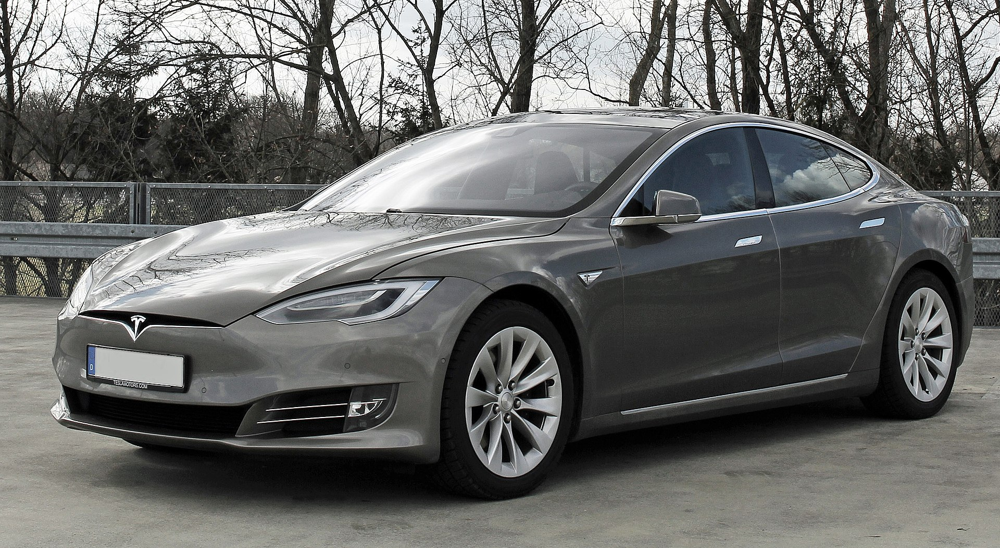
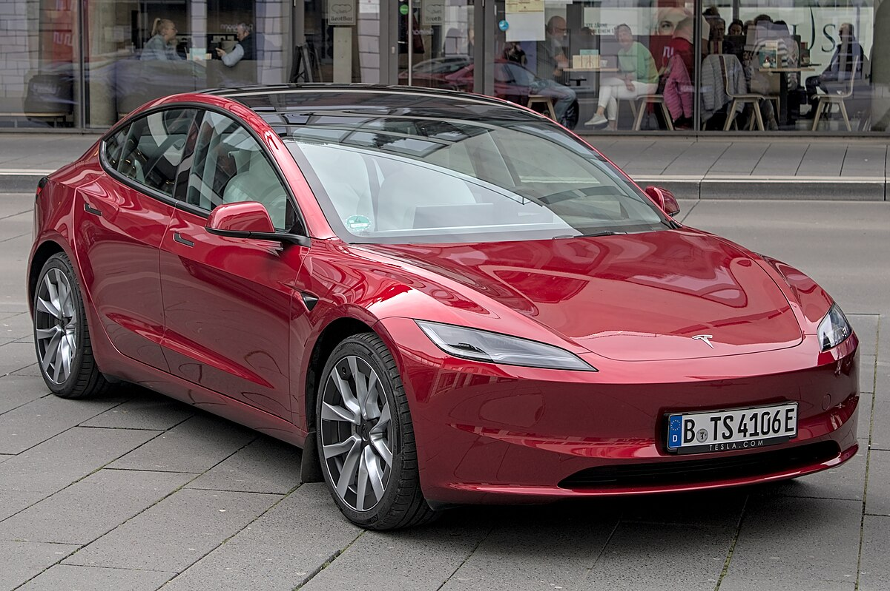
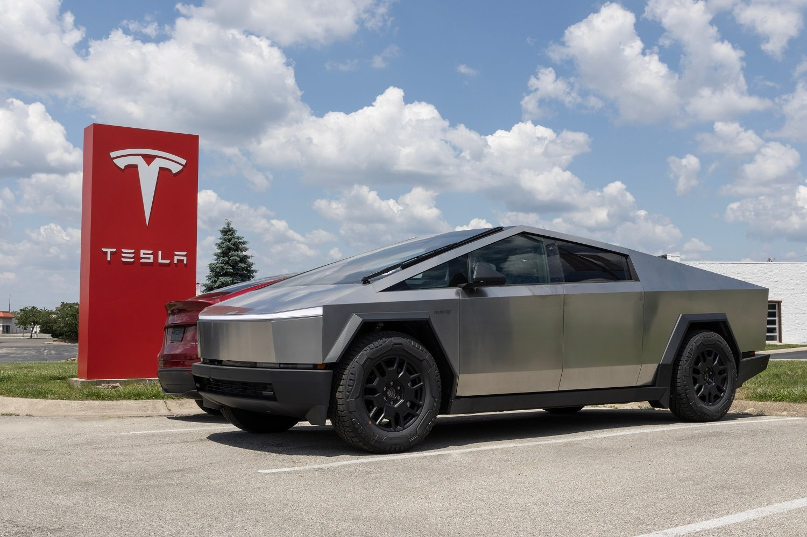
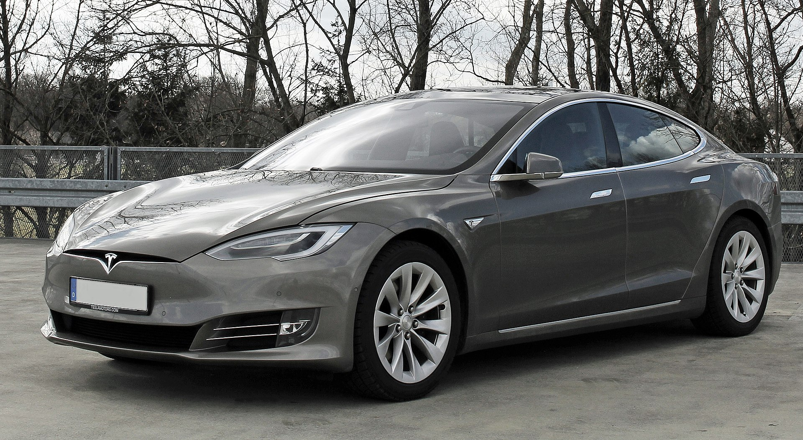
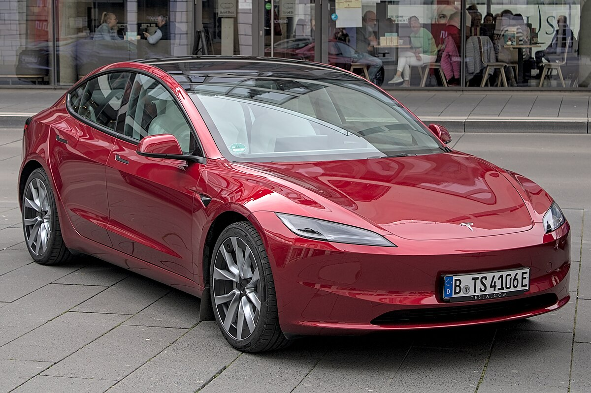
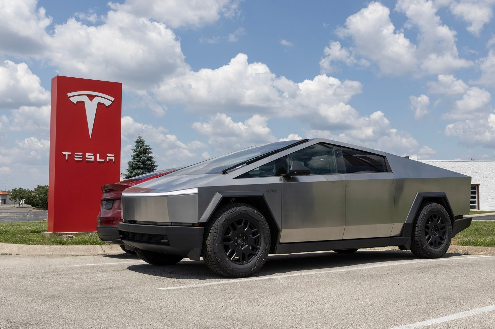

Tesla, Inc.
Membres : Mohammed , Dragos , Noah , Kely
Classe : 1ere STMG | Année : 2025-2026
“Tesla ne fabrique pas seulement des voitures, elle fabrique une vision du futur.”
Classe : 1ere STMG | Année : 2025-2026
“Tesla ne fabrique pas seulement des voitures, elle fabrique une vision du futur.”
 





Fondée en 2003 par Martin Eberhard et Marc Tarpenning, Tesla révolutionne l'industrie automobile électrique. Elon Musk rejoint rapidement l’aventure et devient le visage et moteur financier de l’entreprise. Le Roadster en 2008 inaugure l’ère des véhicules électriques haute performance.
2012 : la Model S, berline de luxe 100% électrique. Elle offre une autonomie record et une expérience technologique inédite.
2015 : Tesla Energy, pour batteries et énergie solaire, permettant de stocker et produire de l’énergie propre.
2023 : Cybertruck, pick-up futuriste au design angulaire, médiatisé et attendu par le marché.

Tesla est une Société Anonyme cotée au Nasdaq (TSLA), centralisée autour d’Elon Musk, avec des bureaux et usines sur plusieurs continents. L’organisation est orientée innovation et rapidité de production.
Tesla compte plus de 140 000 employés à travers le monde, avec un chiffre d'affaires de 96 milliards $ en 2023 et une valorisation boursière autour de 700 milliards $. L’entreprise a connu une croissance spectaculaire depuis sa création et s'impose comme un leader mondial des véhicules électriques.
| Élément | Information |
|---|---|
| Statut | Société Anonyme (SA) |
| Siège social | Palo Alto, Californie, USA |
| PDG | Elon Musk |
| Cotée en bourse | Oui (NASDAQ: TSLA) |


Tesla possède des usines et bureaux sur tous les continents : États-Unis, Chine, Allemagne et bientôt Mexique. Chaque Gigafactory est spécialisée dans un secteur précis : voitures, batteries ou panneaux solaires.


Tesla ne fabrique pas seulement des voitures, elle construit une vision du futur. Avec ses véhicules électriques, son énergie propre et ses innovations en robotique et IA, Tesla façonne le monde de demain. L’entreprise allie technologie, design et durabilité, et démontre qu’une entreprise peut avoir un impact mondial tout en innovant constamment.